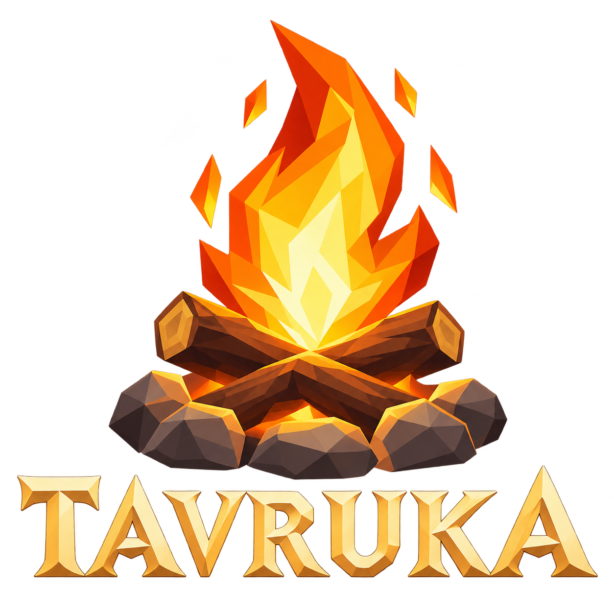

INDEPENDENTLY CREATED IN PORTUGAL
A small project.
A fire worth defending.
Tavruka is an independent game by Sergio Matos, blending action and tower defense across the Tribal, Bronze and Iron Ages.
The game is in active development. Follow its progress, see new gameplay and watch the battlefield take shape.
Follow the journey on YouTubeSTAY CLOSE TO THE FIRE
The next stand
starts here.
Follow the development or get in touch with the creator.
Currently in development. Release details will be shared when ready.